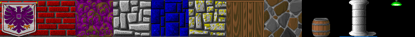
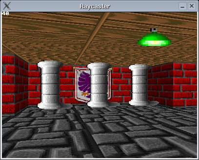
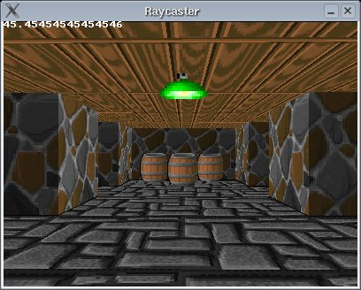
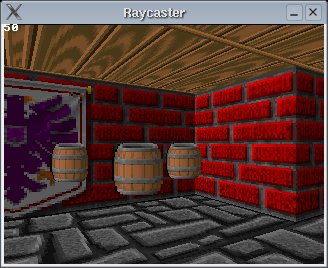
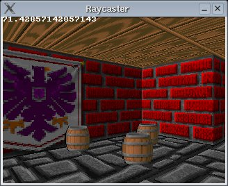
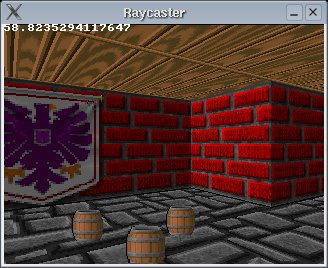
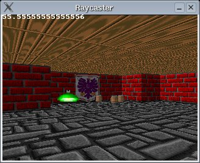
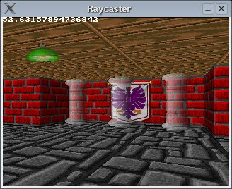
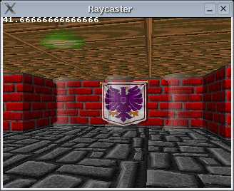
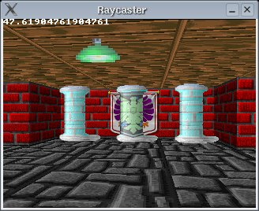

[planeX dirX] [planeY dirY]而 2x2 矩阵的逆矩阵非常容易计算
____________1___________ [dirY -dirX] (planeX*dirY-dirX*planeY) * [-planeY planeX]

#define screenWidth 640
#define screenHeight 480
#define texWidth 64
#define texHeight 64
#define mapWidth 24
#define mapHeight 24
int worldMap[mapWidth][mapHeight] =
{
{8,8,8,8,8,8,8,8,8,8,8,4,4,6,4,4,6,4,6,4,4,4,6,4},
{8,0,0,0,0,0,0,0,0,0,8,4,0,0,0,0,0,0,0,0,0,0,0,4},
{8,0,3,3,0,0,0,0,0,8,8,4,0,0,0,0,0,0,0,0,0,0,0,6},
{8,0,0,3,0,0,0,0,0,0,0,0,0,0,0,0,0,0,0,0,0,0,0,6},
{8,0,3,3,0,0,0,0,0,8,8,4,0,0,0,0,0,0,0,0,0,0,0,4},
{8,0,0,0,0,0,0,0,0,0,8,4,0,0,0,0,0,6,6,6,0,6,4,6},
{8,8,8,8,0,8,8,8,8,8,8,4,4,4,4,4,4,6,0,0,0,0,0,6},
{7,7,7,7,0,7,7,7,7,0,8,0,8,0,8,0,8,4,0,4,0,6,0,6},
{7,7,0,0,0,0,0,0,7,8,0,8,0,8,0,8,8,6,0,0,0,0,0,6},
{7,0,0,0,0,0,0,0,0,0,0,0,0,0,0,0,8,6,0,0,0,0,0,4},
{7,0,0,0,0,0,0,0,0,0,0,0,0,0,0,0,8,6,0,6,0,6,0,6},
{7,7,0,0,0,0,0,0,7,8,0,8,0,8,0,8,8,6,4,6,0,6,6,6},
{7,7,7,7,0,7,7,7,7,8,8,4,0,6,8,4,8,3,3,3,0,3,3,3},
{2,2,2,2,0,2,2,2,2,4,6,4,0,0,6,0,6,3,0,0,0,0,0,3},
{2,2,0,0,0,0,0,2,2,4,0,0,0,0,0,0,4,3,0,0,0,0,0,3},
{2,0,0,0,0,0,0,0,2,4,0,0,0,0,0,0,4,3,0,0,0,0,0,3},
{1,0,0,0,0,0,0,0,1,4,4,4,4,4,6,0,6,3,3,0,0,0,3,3},
{2,0,0,0,0,0,0,0,2,2,2,1,2,2,2,6,6,0,0,5,0,5,0,5},
{2,2,0,0,0,0,0,2,2,2,0,0,0,2,2,0,5,0,5,0,0,0,5,5},
{2,0,0,0,0,0,0,0,2,0,0,0,0,0,2,5,0,5,0,5,0,5,0,5},
{1,0,0,0,0,0,0,0,0,0,0,0,0,0,0,0,0,0,0,0,0,0,0,5},
{2,0,0,0,0,0,0,0,2,0,0,0,0,0,2,5,0,5,0,5,0,5,0,5},
{2,2,0,0,0,0,0,2,2,2,0,0,0,2,2,0,5,0,5,0,0,0,5,5},
{2,2,2,2,1,2,2,2,2,2,2,1,2,2,2,5,5,5,5,5,5,5,5,5}
};
struct Sprite
{
double x;
double y;
int texture;
};
#define numSprites 19
Sprite sprite[numSprites] =
{
{20.5, 11.5, 10}, //green light in front of playerstart
//green lights in every room
{18.5,4.5, 10},
{10.0,4.5, 10},
{10.0,12.5,10},
{3.5, 6.5, 10},
{3.5, 20.5,10},
{3.5, 14.5,10},
{14.5,20.5,10},
//row of pillars in front of wall: fisheye test
{18.5, 10.5, 9},
{18.5, 11.5, 9},
{18.5, 12.5, 9},
//some barrels around the map
{21.5, 1.5, 8},
{15.5, 1.5, 8},
{16.0, 1.8, 8},
{16.2, 1.2, 8},
{3.5, 2.5, 8},
{9.5, 15.5, 8},
{10.0, 15.1,8},
{10.5, 15.8,8},
};
Uint32 buffer[screenHeight][screenWidth]; // y-coordinate first because it works per scanline
//1D Zbuffer
double ZBuffer[screenWidth];
//arrays used to sort the sprites
int spriteOrder[numSprites];
double spriteDistance[numSprites];
//function used to sort the sprites
void sortSprites(int* order, double* dist, int amount);
int main(int /*argc*/, char */*argv*/[])
{
double posX = 22.0, posY = 11.5; //x and y start position
double dirX = -1.0, dirY = 0.0; //initial direction vector
double planeX = 0.0, planeY = 0.66; //the 2d raycaster version of camera plane
double time = 0; //time of current frame
double oldTime = 0; //time of previous frame
std::vector<Uint32> texture[11];
for(int i = 0; i < 11; i++) texture[i].resize(texWidth * texHeight);
|
screen(screenWidth, screenHeight, 0, "Raycaster");
//load some textures
unsigned long tw, th, error = 0;
error |= loadImage(texture[0], tw, th, "pics/eagle.png");
error |= loadImage(texture[1], tw, th, "pics/redbrick.png");
error |= loadImage(texture[2], tw, th, "pics/purplestone.png");
error |= loadImage(texture[3], tw, th, "pics/greystone.png");
error |= loadImage(texture[4], tw, th, "pics/bluestone.png");
error |= loadImage(texture[5], tw, th, "pics/mossy.png");
error |= loadImage(texture[6], tw, th, "pics/wood.png");
error |= loadImage(texture[7], tw, th, "pics/colorstone.png");
//load some sprite textures
error |= loadImage(texture[8], tw, th, "pics/barrel.png");
error |= loadImage(texture[9], tw, th, "pics/pillar.png");
error |= loadImage(texture[10], tw, th, "pics/greenlight.png");
if(error) { std::cout << "error loading images" << std::endl; return 1; }
|
//start the main loop
while(!done())
{
//FLOOR CASTING
for(int y = 0; y < h; y++)
{
// rayDir for leftmost ray (x = 0) and rightmost ray (x = w)
float rayDirX0 = dirX - planeX;
float rayDirY0 = dirY - planeY;
float rayDirX1 = dirX + planeX;
float rayDirY1 = dirY + planeY;
// Current y position compared to the center of the screen (the horizon)
int p = y - screenHeight / 2;
// Vertical position of the camera.
float posZ = 0.5 * screenHeight;
// Horizontal distance from the camera to the floor for the current row.
// 0.5 is the z position exactly in the middle between floor and ceiling.
float rowDistance = posZ / p;
// calculate the real world step vector we have to add for each x (parallel to camera plane)
// adding step by step avoids multiplications with a weight in the inner loop
float floorStepX = rowDistance * (rayDirX1 - rayDirX0) / screenWidth;
float floorStepY = rowDistance * (rayDirY1 - rayDirY0) / screenWidth;
// real world coordinates of the leftmost column. This will be updated as we step to the right.
float floorX = posX + rowDistance * rayDirX0;
float floorY = posY + rowDistance * rayDirY0;
for(int x = 0; x < screenWidth; ++x)
{
// the cell coord is simply got from the integer parts of floorX and floorY
int cellX = (int)(floorX);
int cellY = (int)(floorY);
// get the texture coordinate from the fractional part
int tx = (int)(texWidth * (floorX - cellX)) & (texWidth - 1);
int ty = (int)(texHeight * (floorY - cellY)) & (texHeight - 1);
floorX += floorStepX;
floorY += floorStepY;
// choose texture and draw the pixel
int floorTexture = 3;
int ceilingTexture = 6;
Uint32 color;
// floor
color = texture[floorTexture][texWidth * ty + tx];
color = (color >> 1) & 8355711; // make a bit darker
buffer[y][x] = color;
//ceiling (symmetrical, at screenHeight - y - 1 instead of y)
color = texture[ceilingTexture][texWidth * ty + tx];
color = (color >> 1) & 8355711; // make a bit darker
buffer[screenHeight - y - 1][x] = color;
}
}
// WALL CASTING
for(int x = 0; x < w; x++)
{
//calculate ray position and direction
double cameraX = 2 * x / double(w) - 1; //x-coordinate in camera space
double rayDirX = dirX + planeX * cameraX;
double rayDirY = dirY + planeY * cameraX;
//which box of the map we're in
int mapX = int(posX);
int mapY = int(posY);
//length of ray from current position to next x or y-side
double sideDistX;
double sideDistY;
//length of ray from one x or y-side to next x or y-side
double deltaDistX = (rayDirX == 0) ? 1e30 : std::abs(1 / rayDirX);
double deltaDistY = (rayDirY == 0) ? 1e30 : std::abs(1 / rayDirY);
double perpWallDist;
//what direction to step in x or y-direction (either +1 or -1)
int stepX;
int stepY;
int hit = 0; //was there a wall hit?
int side; //was a NS or a EW wall hit?
//calculate step and initial sideDist
if (rayDirX < 0)
{
stepX = -1;
sideDistX = (posX - mapX) * deltaDistX;
}
else
{
stepX = 1;
sideDistX = (mapX + 1.0 - posX) * deltaDistX;
}
if (rayDirY < 0)
{
stepY = -1;
sideDistY = (posY - mapY) * deltaDistY;
}
else
{
stepY = 1;
sideDistY = (mapY + 1.0 - posY) * deltaDistY;
}
//perform DDA
while (hit == 0)
{
//jump to next map square, either in x-direction, or in y-direction
if (sideDistX < sideDistY)
{
sideDistX += deltaDistX;
mapX += stepX;
side = 0;
}
else
{
sideDistY += deltaDistY;
mapY += stepY;
side = 1;
}
//Check if ray has hit a wall
if (worldMap[mapX][mapY] > 0) hit = 1;
}
//Calculate distance of perpendicular ray (Euclidean distance would give fisheye effect!)
if(side == 0) perpWallDist = (sideDistX - deltaDistX);
else perpWallDist = (sideDistY - deltaDistY);
//Calculate height of line to draw on screen
int lineHeight = (int)(h / perpWallDist);
//calculate lowest and highest pixel to fill in current stripe
int drawStart = -lineHeight / 2 + h / 2;
if(drawStart < 0) drawStart = 0;
int drawEnd = lineHeight / 2 + h / 2;
if(drawEnd >= h) drawEnd = h - 1;
//texturing calculations
int texNum = worldMap[mapX][mapY] - 1; //1 subtracted from it so that texture 0 can be used!
//calculate value of wallX
double wallX; //where exactly the wall was hit
if (side == 0) wallX = posY + perpWallDist * rayDirY;
else wallX = posX + perpWallDist * rayDirX;
wallX -= floor((wallX));
//x coordinate on the texture
int texX = int(wallX * double(texWidth));
if(side == 0 && rayDirX > 0) texX = texWidth - texX - 1;
if(side == 1 && rayDirY < 0) texX = texWidth - texX - 1;
// How much to increase the texture coordinate per screen pixel
double step = 1.0 * texHeight / lineHeight;
// Starting texture coordinate
double texPos = (drawStart - h / 2 + lineHeight / 2) * step;
for(int y = drawStart; y<drawEnd; y++)
{
// Cast the texture coordinate to integer, and mask with (texHeight - 1) in case of overflow
int texY = (int)texPos & (texHeight - 1);
texPos += step;
int color = texture[texNum][texWidth * texY + texX];
//make color darker for y-sides: R, G and B byte each divided through two with a 'shift' and an 'and'
if(side == 1) color = (color >> 1) & 8355711;
buffer[y][x] = color;
}
|
//SET THE ZBUFFER FOR THE SPRITE CASTING
ZBuffer[x] = perpWallDist; //perpendicular distance is used
}
|
//SPRITE CASTING
//sort sprites from far to close
for(int i = 0; i < numSprites; i++)
{
spriteOrder[i] = i;
spriteDistance[i] = ((posX - sprite[i].x) * (posX - sprite[i].x) + (posY - sprite[i].y) * (posY - sprite[i].y)); //sqrt not taken, unneeded
}
sortSprites(spriteOrder, spriteDistance, numSprites);
//after sorting the sprites, do the projection and draw them
for(int i = 0; i < numSprites; i++)
{
//translate sprite position to relative to camera
double spriteX = sprite[spriteOrder[i]].x - posX;
double spriteY = sprite[spriteOrder[i]].y - posY;
//transform sprite with the inverse camera matrix
// [ planeX dirX ] -1 [ dirY -dirX ]
// [ ] = 1/(planeX*dirY-dirX*planeY) * [ ]
// [ planeY dirY ] [ -planeY planeX ]
double invDet = 1.0 / (planeX * dirY - dirX * planeY); //required for correct matrix multiplication
double transformX = invDet * (dirY * spriteX - dirX * spriteY);
double transformY = invDet * (-planeY * spriteX + planeX * spriteY); //this is actually the depth inside the screen, that what Z is in 3D
int spriteScreenX = int((w / 2) * (1 + transformX / transformY));
//calculate height of the sprite on screen
int spriteHeight = abs(int(h / (transformY))); //using 'transformY' instead of the real distance prevents fisheye
//calculate lowest and highest pixel to fill in current stripe
int drawStartY = -spriteHeight / 2 + h / 2;
if(drawStartY < 0) drawStartY = 0;
int drawEndY = spriteHeight / 2 + h / 2;
if(drawEndY >= h) drawEndY = h - 1;
//calculate width of the sprite
int spriteWidth = abs( int (h / (transformY)));
int drawStartX = -spriteWidth / 2 + spriteScreenX;
if(drawStartX < 0) drawStartX = 0;
int drawEndX = spriteWidth / 2 + spriteScreenX;
if(drawEndX >= w) drawEndX = w - 1;
//loop through every vertical stripe of the sprite on screen
for(int stripe = drawStartX; stripe < drawEndX; stripe++)
{
int texX = int(256 * (stripe - (-spriteWidth / 2 + spriteScreenX)) * texWidth / spriteWidth) / 256;
//the conditions in the if are:
//1) it's in front of camera plane so you don't see things behind you
//2) it's on the screen (left)
//3) it's on the screen (right)
//4) ZBuffer, with perpendicular distance
if(transformY > 0 && stripe > 0 && stripe < w && transformY < ZBuffer[stripe])
for(int y = drawStartY; y < drawEndY; y++) //for every pixel of the current stripe
{
int d = (y) * 256 - h * 128 + spriteHeight * 128; //256 and 128 factors to avoid floats
int texY = ((d * texHeight) / spriteHeight) / 256;
Uint32 color = texture[sprite[spriteOrder[i]].texture][texWidth * texY + texX]; //get current color from the texture
if((color & 0x00FFFFFF) != 0) buffer[y][stripe] = color; //paint pixel if it isn't black, black is the invisible color
}
}
}
|
drawBuffer(buffer[0]);
for(int y = 0; y < h; y++) for(int x = 0; x < w; x++) buffer[y][x] = 0; //clear the buffer instead of cls()
//timing for input and FPS counter
oldTime = time;
time = getTicks();
double frameTime = (time - oldTime) / 1000.0; //frametime is the time this frame has taken, in seconds
print(1.0 / frameTime); //FPS counter
redraw();
//speed modifiers
double moveSpeed = frameTime * 3.0; //the constant value is in squares/second
double rotSpeed = frameTime * 2.0; //the constant value is in radians/second
readKeys();
//move forward if no wall in front of you
if (keyDown(SDLK_UP))
{
if(worldMap[int(posX + dirX * moveSpeed)][int(posY)] == false) posX += dirX * moveSpeed;
if(worldMap[int(posX)][int(posY + dirY * moveSpeed)] == false) posY += dirY * moveSpeed;
}
//move backwards if no wall behind you
if (keyDown(SDLK_DOWN))
{
if(worldMap[int(posX - dirX * moveSpeed)][int(posY)] == false) posX -= dirX * moveSpeed;
if(worldMap[int(posX)][int(posY - dirY * moveSpeed)] == false) posY -= dirY * moveSpeed;
}
//rotate to the right
if (keyDown(SDLK_RIGHT))
{
//both camera direction and camera plane must be rotated
double oldDirX = dirX;
dirX = dirX * cos(-rotSpeed) - dirY * sin(-rotSpeed);
dirY = oldDirX * sin(-rotSpeed) + dirY * cos(-rotSpeed);
double oldPlaneX = planeX;
planeX = planeX * cos(-rotSpeed) - planeY * sin(-rotSpeed);
planeY = oldPlaneX * sin(-rotSpeed) + planeY * cos(-rotSpeed);
}
//rotate to the left
if (keyDown(SDLK_LEFT))
{
//both camera direction and camera plane must be rotated
double oldDirX = dirX;
dirX = dirX * cos(rotSpeed) - dirY * sin(rotSpeed);
dirY = oldDirX * sin(rotSpeed) + dirY * cos(rotSpeed);
double oldPlaneX = planeX;
planeX = planeX * cos(rotSpeed) - planeY * sin(rotSpeed);
planeY = oldPlaneX * sin(rotSpeed) + planeY * cos(rotSpeed);
}
}
}
|
//sort algorithm
//sort the sprites based on distance
void sortSprites(int* order, double* dist, int amount)
{
std::vector<std::pair<double, int>> sprites(amount);
for(int i = 0; i < amount; i++) {
sprites[i].first = dist[i];
sprites[i].second = order[i];
}
std::sort(sprites.begin(), sprites.end());
// restore in reverse order to go from farthest to nearest
for(int i = 0; i < amount; i++) {
dist[i] = sprites[amount - i - 1].first;
order[i] = sprites[amount - i - 1].second;
}
}
}
|


//parameters for scaling and moving the sprites
#define uDiv 1
#define vDiv 1
#define vMove 0.0
int vMoveScreen = int(vMove / transformY);
//calculate height of the sprite on screen
int spriteHeight = abs(int(h / (transformY))) / vDiv; //using 'transformY' instead of the real distance prevents fisheye
//calculate lowest and highest pixel to fill in current stripe
int drawStartY = -spriteHeight / 2 + h / 2 + vMoveScreen;
if(drawStartY < 0) drawStartY = 0;
int drawEndY = spriteHeight / 2 + h / 2 + vMoveScreen;
if(drawEndY >= h) drawEndY = h - 1;
//calculate width of the sprite
int spriteWidth = abs( int (h / (transformY))) / uDiv;
int drawStartX = -spriteWidth / 2 + spriteScreenX;
if(drawStartX < 0) drawStartX = 0;
int drawEndX = spriteWidth / 2 + spriteScreenX;
if(drawEndX >= w) drawEndX = w - 1;
//loop through every vertical stripe of the sprite on screen
for(int stripe = drawStartX; stripe < drawEndX; stripe++)
{
int texX = int(256 * (stripe - (-spriteWidth / 2 + spriteScreenX)) * texWidth / spriteWidth) / 256;
//the conditions in the if are:
//1) it's in front of camera plane so you don't see things behind you
//2) it's on the screen (left)
//3) it's on the screen (right)
//4) ZBuffer, with perpendicular distance
if(transformY > 0 && stripe > 0 && stripe < w && transformY < ZBuffer[stripe])
for(int y = drawStartY; y < drawEndY; y++) //for every pixel of the current stripe
{
int d = (y-vMoveScreen) * 256 - h * 128 + spriteHeight * 128; //256 and 128 factors to avoid floats
int texY = ((d * texHeight) / spriteHeight) / 256;
Uint32 color = texture[sprite[spriteOrder[i]].texture][texWidth * texY + texX]; //get current color from the texture
if((color & 0x00FFFFFF) != 0) buffer[y][stripe] = color; //paint pixel if it isn't black, black is the invisible color
}
}
}
|




if((color & 0x00FFFFFF) != 0) buffer[y][stripe] = color; //paint pixel if it isn't black, black is the invisible color
|
if((color & 0x00FFFFFF) != 0) buffer[y][stripe] = RGBtoINT(INTtoRGB(buffer[y][stripe]) / 2 + INTtoRGB(color) / 2); //paint pixel if it isn't black, black is the invisible color
|

if((color & 0x00FFFFFF) != 0) buffer[y][stripe] = RGBtoINT(3 * INTtoRGB(buffer[y][stripe]) / 4 + INTtoRGB(color) / 4); //paint pixel if it isn't black, black is the invisible color
|

if((color & 0x00FFFFFF) != 0) buffer[y][stripe] = RGBtoINT((RGB_White - INTtoRGB(buffer[y][stripe])) / 2 + INTtoRGB(color) / 2); //paint pixel if it isn't black, black is the invisible color
|
